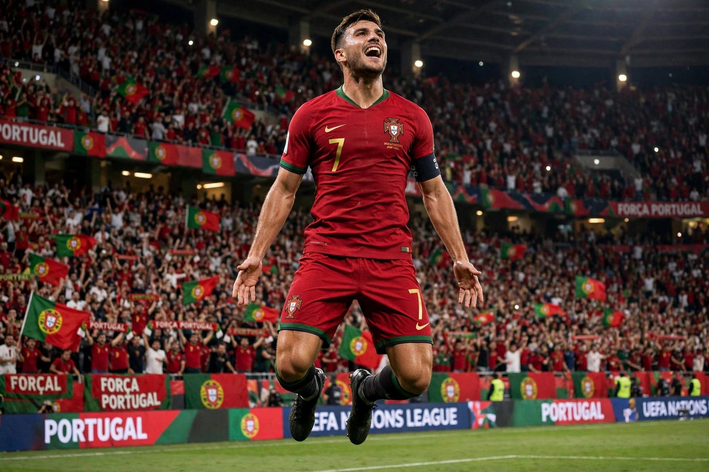

From Wikipedia, the free encyclopedia
| Cristiano Ronaldo | |
|---|---|
 Cristiano Ronaldo performing his famous 'Siu' goal celebration, arms outstretched, back to camera showing number 7 | |
| Full name | Cristiano Ronaldo dos Santos Aveiro |
| Date of birth | 5 February 1985, Funchal, Madeira, Portugal |
| Position | Forward |
| Current team | Al-Nassr FC |
| Senior career | Sporting CP (2002–2003); Manchester United (2003–2009, 2021–2022); Real Madrid (2009–2018); Juventus (2018–2021); Al-Nassr (2023– ) |
| National team | Portugal (2003– ) |
Cristiano Ronaldo dos Santos Aveiro (born 5 February 1985) is a Portuguese professional footballer who plays as a forward for Saudi Pro League club Al-Nassr and captains the Portugal national team. Widely regarded as one of the greatest players of all time, Ronaldo has won five Ballon d'Or awards, five UEFA Champions League titles and league titles in England, Spain and Italy. He holds the records for most goals in the Champions League (140), most international goals in men's football, and most international appearances.
Ronaldo began his career at Sporting CP before joining Manchester United in 2003, winning three consecutive Premier League titles and his first Champions League and Ballon d'Or. In 2009 he moved to Real Madrid for a then-world-record fee, where his rivalry with Lionel Messi defined an era: he scored a club-record 450 goals and won four more Champions Leagues, including three in a row (2016–2018). After three seasons at Juventus and a brief return to United, he joined Al-Nassr in January 2023.
Ronaldo captained Portugal to its first major trophy at UEFA Euro 2016 and to victory in the inaugural UEFA Nations League in 2019 (and again in 2025). He is the top scorer in the history of the European Championship and the only man to score at five World Cups.
Categories: 1985 births | Living people | Portuguese footballers | Ballon d'Or winners